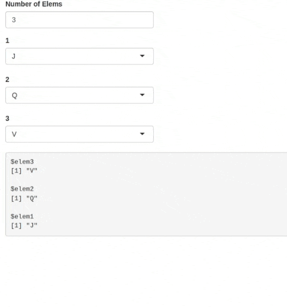
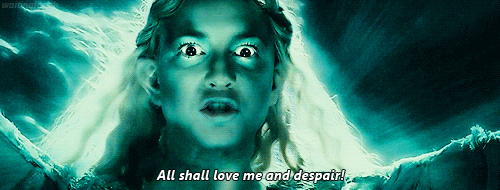

Introduction
I recently came across this stackoverflow post from 6 years ago and I was intrigued.
The OP wanted to render a dynamic number of selectInputs. The number of the selectInputs would be dependent on the value of a numericInput.
If the numericInput had a value of 3 then there would be 3 selectInputs on the UI.
The OP correctly made this observation:
- Say the default value of the
numericInputis 3. If you change it to 2, the UI correctly updates and there are only 2selectInputs. But when you print theinputobject, it still contains the id and value of the 3rdselectInputeven though it is not currently rendered. - Generally, the
inputslot does not correspond with the current number of elements, but with the largest number chosen during the session.
Here is the reprex the OP provided:
reprex-from-op.R
library(shiny)
library(plyr)
testUI <- function(id) {
ns <- NS(id)
uiOutput(ns("container"))
}
test <- function(input, output, session, numElems) {
output$container <- renderUI(do.call(tagList, llply(1:numElems(), function(i)
selectInput(session$ns(paste0("elem", i)),
label = i, choices = LETTERS[sample(26, 3)]))))
getNames <- reactive(reactiveValuesToList(input))
list(getNames = getNames)
}
ui <- fluidPage(numericInput("n", "Number of Elems", value = 3),
testUI("column1"),
verbatimTextOutput("debug"))
server <- function(input, output, session) {
getN <- reactive(input$n)
handler <- callModule(test, "column1", getN)
output$debug <- renderPrint(handler$getNames())
}
shinyApp(ui, server)My manager at work always says “Trust but verify”. So please run the reprex and ascertain that all the above observations are indeed true.
My $0.02
The OP had 2 questions:
- Is this behaviour intentional?
- If so, how can I update the
inputto assure that it only contains valid slots?
TL;DR
Is this behaviour intentional?
I don’t know. But it is consistent. The OP used renderUI in the reprex, I will use insertUI/removeUI in my reprex later and you will see that the behaviour is the same.
How can I update the
inputto assure that it only contains valid slots?
You can set the “invalid” slots to NULL, then use req() or isTruthy() to check for validity in your server.R.
Explanation
We finally get to the juicy part.
Here’s what I know about input:
inputis immutable from the app’s server, unless you useupdate*Input(). eg. If you try this:you will get an error: “Can’t modify read-only reactive value ‘random_id’”.
Once added, you can’t remove an element (an input id) from
input, but you can change its value (usingupdate*Input()or JavaScript).Changing the value of an element to
NULLwill not remove it frominput.By that I mean
inputwill not behave like a regular list where setting the value of an element toNULLremoves it from the list:Also, you can’t use
update*Input()to set the value of an input id toNULL. From?updateSelectInput:Any arguments with
NULLvalues will be ignored; they will not result in any changes to the input object on the client.So to set the value of an input element to
NULLyou have to use JavaScript and provide the optionpriority: "event". Reference.We can use
3above to our advantage: Set the unwanted input id values (the ones whose UI has been removed/deleted) toNULL.This is what will allow us to use
req()orisTruthy()if need be.
Reprex
In the reprex below, I show how you can set the input id values to NULL.
Also, I use insertUI/removeUI as stated earlier.

ui.R
server.R
R/mod_test_ui.R
R/mod_test_server.R
mod_test_server <- \(id, numElems) {
moduleServer(
id = id,
module = \(input, output, session) {
ns <- session$ns
# reactive to track added UI ids:
rv_added_ids <- reactiveValues(ids = NULL)
observeEvent(numElems(), {
# do nothing if `numElems()` is less than zero:
n <- numElems()
if (n < 0) return()
# remove previously rendered UIs:
removeUI(
selector = sprintf("#%s > *", ns("container")),
multiple = TRUE,
immediate = TRUE
)
# inform JS to set the removed input id values to NULL:
lapply(rv_added_ids$ids, \(id) {
session$sendCustomMessage(
type = "set_to_null",
list(id = id, value = NULL)
)
})
# reset tracker:
rv_added_ids$ids <- NULL
# add new UIs:
lapply(seq_len(n), \(i) {
id <- ns(paste0("elem", i))
# track new id:
rv_added_ids$ids <- c(rv_added_ids$ids, id)
insertUI(
selector = paste0("#", ns("container")),
where = "beforeEnd",
ui = selectInput(
inputId = id,
label = i,
choices = LETTERS[sample(26, 3)]
)
)
}
)
})
getNames <- reactive(reactiveValuesToList(input))
list(getNames = getNames)
}
)
}Conclusion
$(this) has been the input in function(input, output, session).
Me: At this point I can confidently say that I like JavaScript.
JS:
